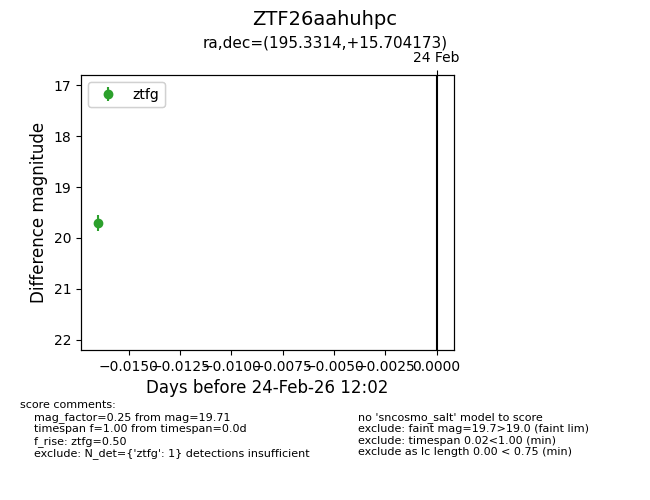
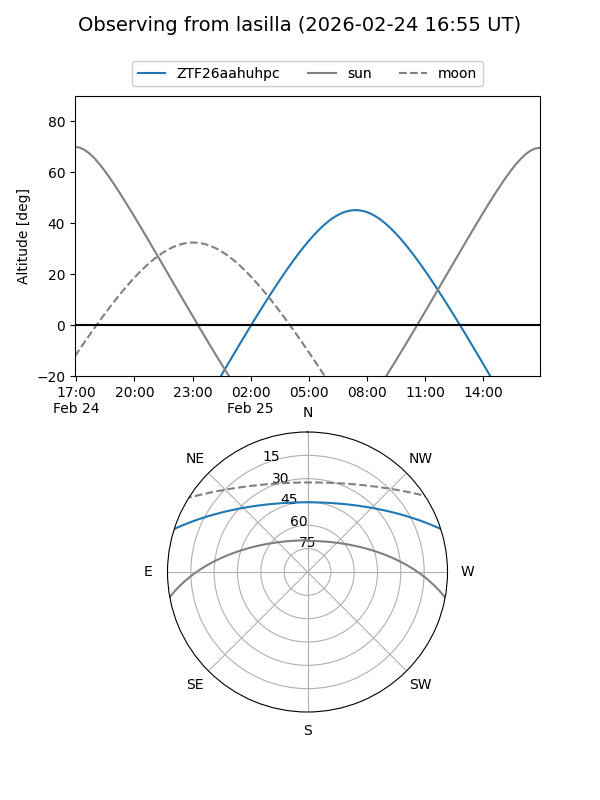
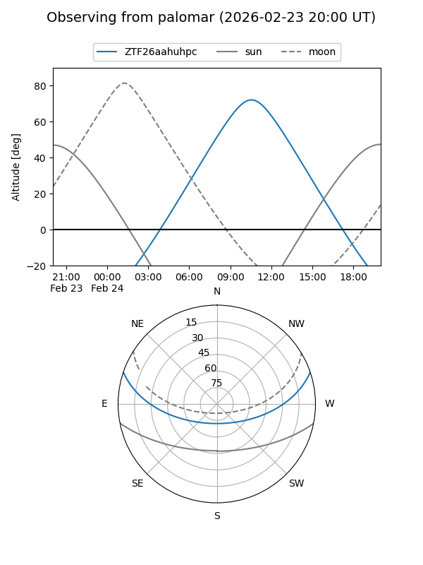

ZTF26aahuhpc
Target ZTF26aahuhpc at 2026-02-24 12:03
Aliases and brokers:
FINK: link
Lasair: link
ALeRCE: link
alt names
ZTF26aahuhpc (ztf,fink_ztf)
Coordinates:
equatorial (ra, dec) = 195.3314,+15.70417
equatorial (HMS+DMS) = 13:01:19.53,+15:42:15.02
galactic (l, b) = (314.7946,+78.34756)
Flags:
Photometry:
last ztfg=19.71
1 ztfg detections
Lightcurve

Visibility


Additional plots